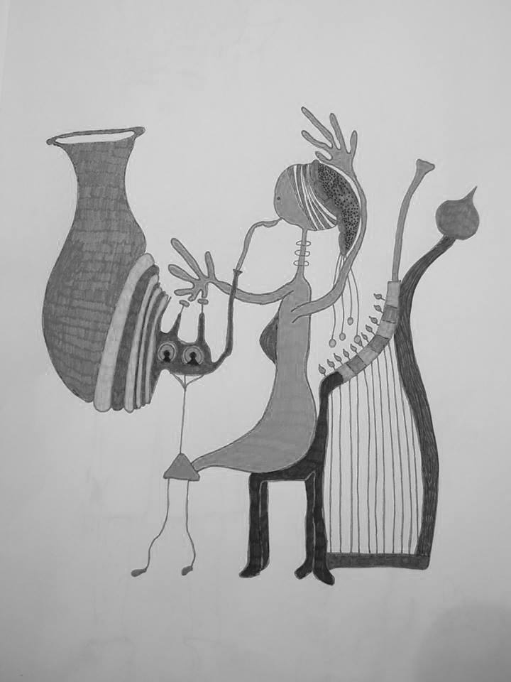
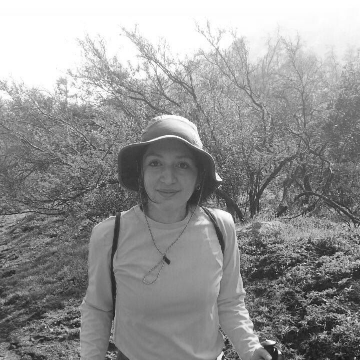
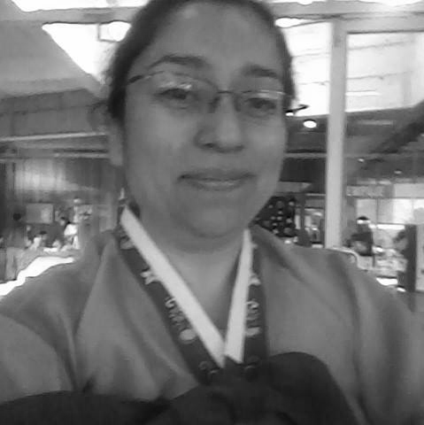

Josefina López |

Susana Tralma |

Paulina Valenzuela |
Nicole Lira |

Dayana Alvarado |

Paula Selpulveda |

Evelin Riquelme |

Kelly Urribarri |
Ha sido un gran desafío empreder este viaje e ir viendo concretamente cómo hemos ido avanzando en este largo camino que es el conocimiento del universo virtual.